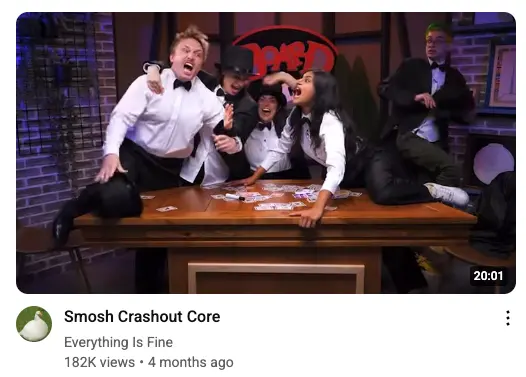
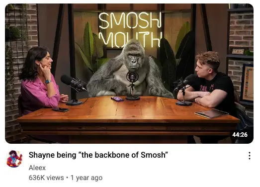
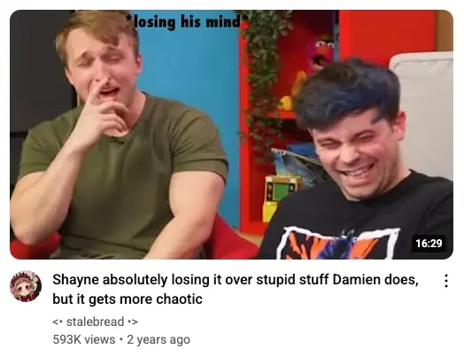
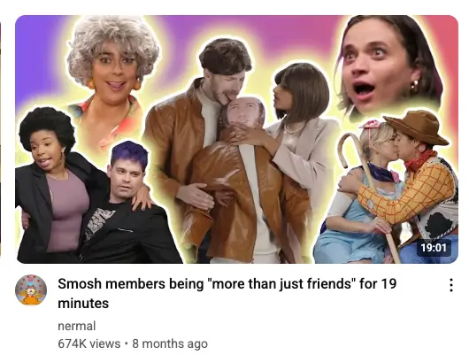
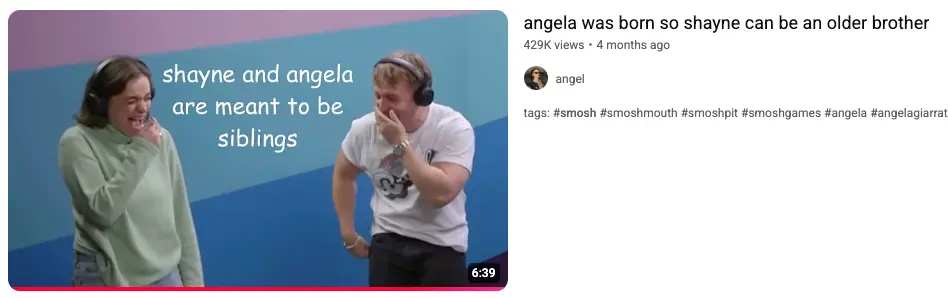
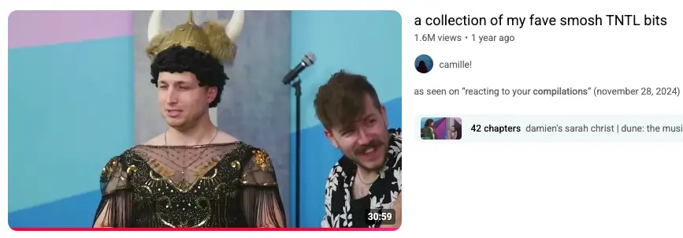
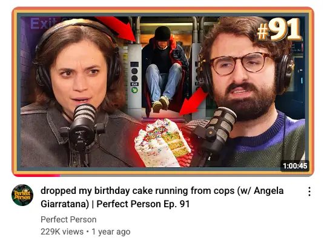
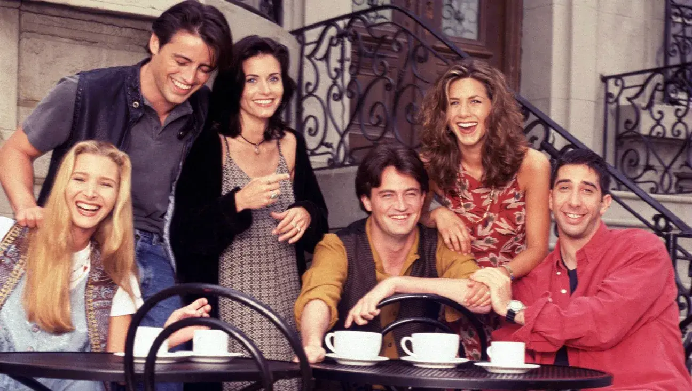
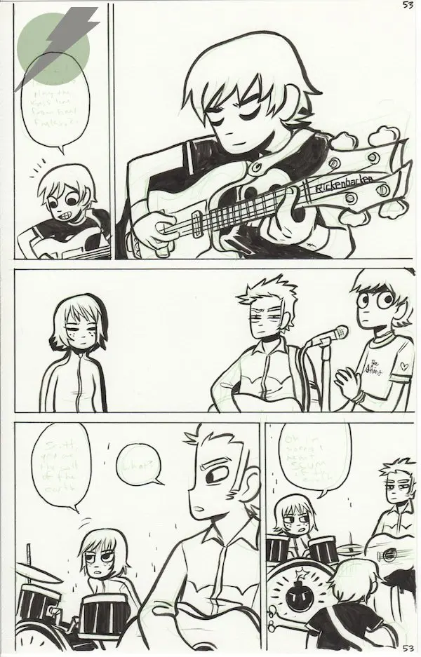

- 2025-07-27
- It’s a Sunday, I’m emerging from a low energy few days, I’m timeboxing this to a single pomodoro for now 🍅
- As discussed yesterday in What is next for me after living at my mum’s? day 1
Meta - Message sent to my friends re: this post
“Did a 1-pom treatment on the “should I value in-person connection more highly?” thing”
“at the very least I was thinking that, to explicitly map out my parasocial life might be useful (re: e.g. ridiculousness audit, giving Simmo an insight into how chronically online introverts live etc lol)
“perhaps a goal is to totally reduce parasocial life with social life. This intuitively seems like a no brainer (although I’d miss my parasocial besties, but then of course that’s the thing, they’re not my besties, they’re people i’ll never meet)”
“(be an in-person friend, not an online fan, you dweeb)“
1. “I need to get better at thinking”
- Something that’s been on my mind recently is:
- How much do I really need to “learn how to think”? Isn’t this website enough?
2. “I need to get better at in-person connection”
- Perhaps it’s my nerdy introvert brain saying “you’ve gotta fix your epistemics bro, obviously that’s the most important thing bro, and also learn all about philosophy while you’re at it bro”
- Meanwhile I’m here living at my mums with no in-person friends, no car, no dating prospects etc

3. Signs that I care a lot about in-person connection
Peak memories
- May be true that all my peak memories involve being with other people
- Holidays with my ex-girlfriend
- Holidays with my friend group from school
- Camping as a cub/scout
- Weekends with my cousin as a kid/teenager
- Work retreats with Alvea
- Canadian cottage holiday with Toronto post-rationalists
- Beach trip with my lovely friend in Taipei
- Etc
Media consumption
- When it comes to podcasts, despite being a nerd who loves learning, I just can’t do non-fiction
- It’s been this way for years. I think it’s because I’m pretty intense and work a lot, so when it comes to down time, on walks, doing the dishes etc, my brain is like “absolutely not, we’re not learning right now”
NON-STOP COMEDY PODCASTS AND YOUTUBE VIDEOS
- I’ve spent most of my time alone since my big breakup in Sep 2022
- And I’ve listened to an absurd amount of comedy podcasts in that time
- And the podcasts are really just people hanging out
- I have all these parasocial besties but guess what, we’re not besties! It’s parasocial!
Meta note: I think there’s something interesting here re: mapping out my “parasocial” life - something that is this background thing that other people don’t see. Very interesting and weird modern phenomenon
What’s the first thing I do when I wake up?
- Throw on a comedy podcast when I make breakfast/brush my teeth etc
- Immediate (parasocial) connection
Current
Headgum podcast - friends hanging out
- I’ve listened to 2+ hours of this show for monthsssss
- Geoffrey James (the host) is so incredibly funny
- And what am I watching? I’m watching (or listening to) friends hang out and laugh together
- And guess what, it recently moved to Patreon, so now I’m paying to watch friends hang out, lmao
Smosh videos - friends having fun and hanging out
- My youtube algorithm is like 70% smosh atm, I’m really having a smosh renaissance
- It’s charismatic funny hot people hanging out and making each other laugh a lot
- Sure serotonin/dopamine. Monetised friendship, basically, very parasocial
- Sharing some thumbnails from my youtube recommendation feed:






- The gang 👇
Perfect Person podcast - comedy people having fun and connecting

Past
My Dad Wrote a Porno - friends having fun
- (Haven’t listened to this for a few years but I lovedddd their chemistry, so fun)
Review Revue
- When I lived in Albania for a month and talked to 0 people IRL I listened to this constantlyyyy
Friends!
- Of course, a classic
- Season 1 is maybe my fav?
- Popularity of this show as a testament to how much people want a friend group like this - they’re in New York yet they live across the hall1 and see each other before work each day, lol

Scott Pilgrim
- Kinda all about friends hanging out
- And Scott dating Ramona

Harry Potter!!!!
- I wonder how much of the appeal of this (I read it non-stop, on repeat for YEARS as a kid) was due to the friendship dynamic??
4. So yeah
- This doc was just a quick dump. But CLEARLY there’s something here re: the importance of connection, comedy, fun, etc. I’m not just a lil enneagram 3w4 nerd. Part of me would love to have in-person friendships like the above. It feels daunting to replicate or have as a north star vs “get a great job” or “learn a bunch about xyz” or whatever, but oh man, can’t help but think it’d be… life changing etc
scrappy things added after the fact
People I know who don’t listen to podcasts
- 2025-07-28 → friends from school who now live in London and don’t have time for podcasts (as they have so much IRL connection with a great friend group)
Simmo claim: “you wouldn’t miss your parasocial besties”
- From Simmo:
“Claim. Alex would not miss his para-social besties at all”
“He’ll make real friends, have fond memories of these shows but won’t miss them like he would real friends because the connections are one-way"
"What if I quit cold turkey?”
- I think given how isolated I am from people atm (living at my mum’s in a small village), quitting cold turkey would be net bad
- It might make me message/call people more. but idk, it feels important to have some “connection” even if it’s fake - spending “time” with people who are funny, similar senses of humour, role models etc. Feels like it would be very… idk, self-punitive, isolating, to cold turkey right now
Footnotes
-
Well, some of them ↩